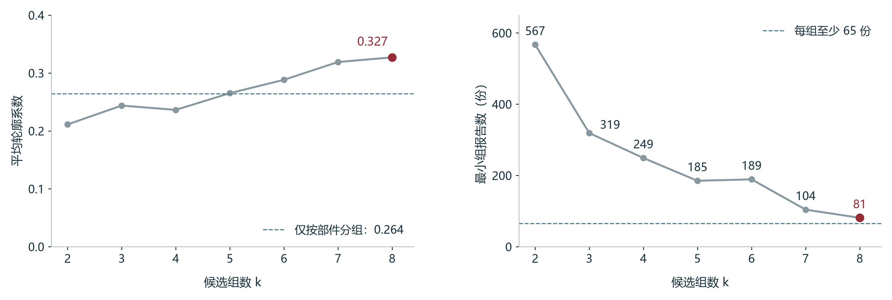
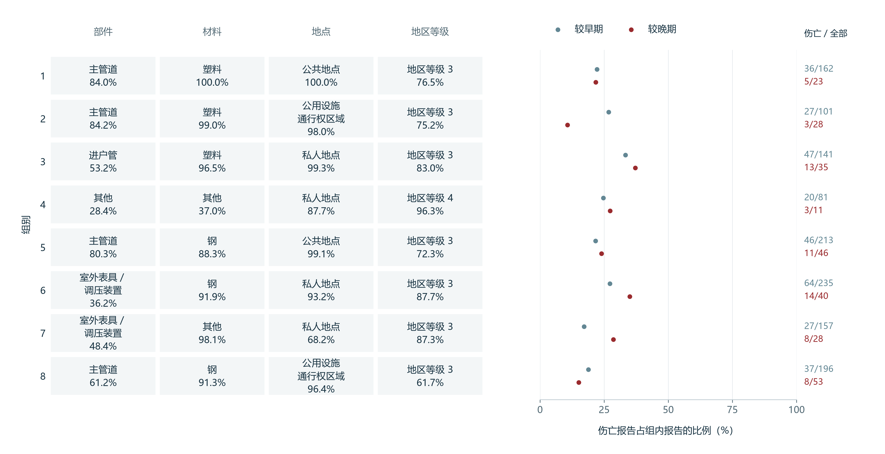

第一章比较了部件、材料和地点的伤亡差异，并结合管网规模计算了材料的事故报告率。企业据此安排人员保护和设施检查时，需要知道事故中谁受了伤、受伤时正在做什么，以及涉事管道的规格和周围环境。本章依次比较不同场地的受伤人员，核对开挖与维修中的伤害过程，再研究设施条件与环境因素。伤亡指报告记录至少一人死亡，或因伤住院至少一晚；一宗多人伤亡事故仍计一份报告。
2.1 部件、场地与受伤人员
进户管连接用户，但事故中的伤者也可能是在现场作业的工作人员。为确定保护对象，我们在公共、私人地点分别比较进户管与主管道，并区分公众和工作人员等的伤亡。工作人员等包括燃气企业员工、承包商、应急人员及通行权区域内其他工作者。
图 11左侧为公共地点，右侧为私人地点；圆点表示涉及公众伤亡的报告比例，菱形表示涉及工作人员等伤亡的比例。两类人员同时受伤的报告分别计入各自比例；计算总伤亡比例时，每份报告只计一次。
公共地点较多涉及工作人员，私人地点较多涉及公众


公共地点的两类管道均较多涉及工作人员。公共进户管的总伤亡比例为44.4%，高于主管道的18.2%，因此进户管的人员保护需要覆盖现场作业者。私人地点的两类管道则均较多涉及公众，进户管与主管道的总伤亡比例接近，分别为35.2%和36.3%。
工作人员受伤时的具体任务由事故经过确认。20110152号报告记载，维修队锯切漏气的进户管段时，燃气被点燃，一名队员面部烧伤。这宗公共进户管事故的复盘内容包括切割前的供气控制、切割任务和点火条件。维修经过与审读记录
私人场地的公众保护还涉及主管道，因此我们继续核对相同材料、相同部件中的场地差别。按部件、材料、地点和地区等级进行的类别聚类，找到了公共、私人地点的主管道对照。我们再比较2010至2021年收件的全部塑料主管道。下表显示，同为塑料主管道，私人地点涉及公众伤亡的比例仍较高。
| 早期塑料主管道的场地 | 全部报告，份 | 涉及公众伤亡，份 | 组内比例 |
|---|---|---|---|
| 公共地点 | 136 | 9 | 6.6% |
| 私人地点 | 35 | 12 | 34.3% |
因此，私人场地的公众保护应同时覆盖进户管与主管道，事故复盘应确认公众所在位置、燃气影响范围及受伤经过。类别聚类的编码、选组和实际组画像见本章资料说明。
2.2 开挖、运行与维修中的伤害过程
全部原因比较引出开挖与维修
材料之间的伤亡差异可能涉及不同的损伤过程。为确定开挖、运行和维修中的人员保护重点，我们沿用第一章的693份主管道及主管道阀匹配报告，比较八类主要原因的全部报告数和伤亡报告数。下表列出各材料最常见的原因，完整八类计数见资料说明。
| 材料 | 全部报告中最多的原因 | 伤亡报告中最多的原因 |
|---|---|---|
| 钢管，347份，其中49份伤亡 | 开挖损坏196份，其中6份伤亡 | 错误操作22份伤亡，来自32份报告 |
| 塑料管，293份，其中70份伤亡 | 开挖损坏195份，其中35份伤亡 | 开挖损坏35份，占该材料伤亡报告的一半 |
| 铁管，53份，其中22份伤亡 | 自然因素15份，其中9份伤亡 | 自然因素9份 |
钢管的开挖报告最多，但伤亡报告中最多的原因是错误操作；塑料管的开挖伤亡报告则占其伤亡报告的一半。因此，本节同时查看开挖后的燃气状态和运行维修中的受伤任务。铁管伤亡报告中最多的原因是自然因素，2.3节据此检查事发环境。
开挖损坏包括挖掘、钻孔损伤及旧施工损伤后的失效；错误操作包括运行、维护和维修中的操作问题。每份报告只有一个主要原因标签，最初施工者、后续处置者和伤者的活动分别由人员字段和事故经过确认。
燃气点燃与开挖事故中的伤亡
开挖损坏后的泄漏也涉及燃气点燃和现场处置。为理解钢管与塑料管的开挖伤亡差别，我们分别比较两组记录点燃的份额，以及记录燃气点燃的报告中的伤亡比例。钢管与塑料管分别有196份和195份报告。图 12依次连接材料、燃气点燃记录和人员后果，流带宽度表示报告份数；点燃指泄漏燃气被点燃。
塑料开挖报告更常记录燃气点燃，伤亡也多见于点燃组


塑料管报告进入棕色点燃支路的份额明显更大。已经记录点燃的报告中，钢管有6／20份伴随伤亡，塑料管为32／100，观察比例分别为30%与32%，相当接近。两种材料采用相同点燃份额重新汇总后，伤亡比例差明显缩小，说明点燃份额的差别是理解本批钢塑伤亡差异的重要依据。完整计算见资料说明。
管径构成与燃气点燃的比例差
前一步使用391份开挖报告，比较了燃气点燃与伤亡的关系。为理解两种材料的点燃比例为何不同，我们接着核对管径和压力。钢塑开挖报告涉及的管径和压力分布不同，直接汇总点燃比例会同时包含材料和规格的差别。我们选取正常运行压力高于1且不超过60 psig的共同范围，再按相同管径构成汇总点燃比例。保留的287份报告包括钢管101份、塑料管186份；psig是相对大气压的压力单位。
按共同管径构成比较后，钢与塑料的点燃比例差缩小


图 13左侧显示，塑料管的小管径份额较大；中间显示，两种材料各自的小管径档都有较高的点燃比例。重新汇总时，两种材料采用合计287份报告的同一管径构成，各自三个管径档内的点燃比例保持原值。钢管中较高点燃比例的小管径档占比增加，塑料管中相应档位的占比减少，因此钢管的汇总比例上升，塑料管的汇总比例下降，两者差距缩小。管径构成解释了一部分点燃比例差异。比较这批开挖事故时，应同时核对管径构成、泄漏后的控气过程与现场点火条件。
从最初损伤到后续停气和维修
点燃记录说明了泄漏燃气的状态，人员保护还需要知道伤害发生在施工当时还是后续处置阶段。因此，我们逐篇核对35份塑料开挖伤亡报告，其中六份明确记载第三方先损伤管道，燃气企业人员随后在停气、旁通或维修中受伤。各案的任务和伤害如下。
| 报告号 | 最初损伤者及作业 | 燃气企业人员的后续任务 | 记录的人员伤害 |
|---|---|---|---|
| 20120038 | 第三方铺设光纤，切断塑料主管道 | 安装旁通，在三通处开孔 | 作业期间燃气点燃，一名员工烧伤住院 |
| 20140029 | 第三方开挖损伤主管道 | 维修队手挖寻找损伤位置 | 爆炸后起火，报告记载员工伤害；未逐人确认手挖动作 |
| 20190127 | 另一公用事业施工方挖中主管道 | 夹断管线，停止供气 | 三名装配工烧伤，其中一名住院 |
| 20210011 | 第三方更换地下电力设施时钻破主管道 | 暴露管线，准备停气 | 两名员工被建筑爆炸和火焰烧伤，其中一名住院 |
| 20210038 | 电缆承包商定向钻损伤主管道 | 在远端作业坑控漏，扩坑时碰到路灯电缆 | 迁移到坑内的燃气被点燃，三名员工住院 |
| 20220039 | 供水单位抢修时挖穿主管道 | 安装修补卡箍 | 两名员工受到燃气影响，其中一名住院；未记录点燃 |
六份原案说明，人员保护要覆盖损伤之后的停气、旁通及维修任务。事故复盘应分别记录最初施工者与后来受伤的工作人员，并核对后续作业时的燃气状态和人员位置。原案、人员字段与证据原句
钢管错误操作的原案同样记载了运行和维修中的人员伤害。22份错误操作伤亡报告均涉及燃气企业员工或承包商，其中5份未记录点燃，事故经过记载了压力释放、堵头或碎屑等伤害。20110035号报告还记载，拆除受损钢管后，工作人员连接塑料替换段时燃气被点燃，造成燃气部门人员伤亡。报告中的涉事材料为钢，实际受伤却发生在塑料替换段的连接作业中。因此，运行维修事故的复盘应核对泄漏控制、组件连接和带压操作，并区分原管材料与实际操作的组件。22份操作伤亡报告
2.3 材料背后的设施条件与环境因素
开挖专题说明，比较材料时需要同时考虑管径；铁管伤亡报告中最多的原因又是自然因素。因此，本节继续核对管道周围的地面环境，并比较同种材料中管龄、管径与正常运行压力的差别。
铁管自然因素报告集中于11月至3月
PHMSA的自然因素类别包含冻胀等天气与地面作用，发生月份可以提供季节线索。图 14比较42份自然因素报告的月份分布，其中铁管15份、钢管17份、塑料管10份。月份沿圆周排列，柱长表示报告份数，红段表示其中伴随伤亡的报告。
铁管自然因素报告全部发生于11月至3月


铁管的柱形全部落在11月至3月，钢管与塑料管的月份更分散。为确认这种集中是否普遍出现在铁管报告中，下表继续比较同批铁管的自然因素与其他原因。自然因素组的冬季集中仍更明显。
| 铁管报告的原因组 | 全部报告，份 | 11月至3月发生，份 | 该时段所占比例 |
|---|---|---|---|
| 自然因素 | 15 | 15 | 100% |
| 其他原因 | 38 | 22 | 57.9% |
自然因素组与其他原因组都包含老设施，已知管龄的中位数分别为83年和97年。月份对照显示了本批报告的季节关联，原案则提供具体的地面作用记录。20140014号报告记录现场14英寸冻土，填报者推测冻胀参与破坏；20150011号报告将裂缝归于土壤沉降，并记载下沉管线压在旧砖基础上。因此，同类铁管的设施检查应结合当地冻土、沉降和管道支撑记录，核对管体的损伤位置。自然因素原案与编码
同为钢管，三组规格与运行压力仍不同
同一种材料可以用于管径和运行压力不同的设施。为寻找可参照的主管道事故，我们用K-means按管龄、管径和正常运行压力形成三组，再查看各组中的钢管；材料与伤亡结果只用于分组后的解释。图 15左侧显示621份完整记录，每个空心圆是一份报告，位置显示管径和压力，圆面积显示管龄。计算同时考虑管龄、管径和压力，因此二维位置重叠的报告仍可能因管龄不同而分入不同组。
三组钢管的管龄中位数接近，管径与压力仍不同


右侧分别比较三个组中钢管的中位数。管龄的三条横条几乎一样长，均约52年；管径和压力的横条却有明显差别。较大管径组的钢管管径和正常运行压力均较高，老龄低压组的钢管管径居中，压力却很低。相近的是各组钢管的管龄中位数，个体没有按管龄匹配；组名则概括各组全部设施。
因此，选择历史事故作参照时，管径和正常运行压力应与材料、管龄一同核对。三组按设施条件形成，早期521份报告确定尺度和中心，后期100份沿用固定规则归组；实际输入、选择三组的依据及Matplotlib三维过程图见图 S6和本章资料说明。
场地与作业经过明确了公众、工作人员各自的保护重点，管径、压力和地面环境则明确了设施检查需要的资料。第三章选用报告共同提供的部件、材料、地点和地区等级，估计已报告事故伴随伤亡的概率，再用2022年起收到的报告核对分类判断与实际结果。继续阅读：事故伤亡的判别与预测
资料与计算说明
场地、人员身份与实际活动
场地比较来自全部1,550份报告中的967份主管道与进户管报告。图 11显示公共、私人地点661份，其余306份属于通行权区域与运营商控制场地，完整记录均保留。涉及各类人员伤亡的比例均按相应场地、部件的全部报告数计算；同一报告可以同时涉及公众和工作人员等。地点是报告中的场地类型，不能直接换成“室内／室外”或“住宅／非住宅”。
| 场地／部件 | 全部报告 | 伤亡报告 | 涉及公众 | 涉及工作人员等 | 两类人员均有伤亡 |
|---|---|---|---|---|---|
| 公共／主管道 | 363 | 66 | 17 | 50 | 1 |
| 公共／进户管 | 45 | 20 | 7 | 14 | 1 |
| 私人／主管道 | 91 | 33 | 29 | 8 | 4 |
| 私人／进户管 | 162 | 57 | 43 | 19 | 5 |
135份原案审读纳入全部45份公共进户管报告，再各选45份公共主管道、私人进户管，按材料优先、发生年份接近一对一匹配。同材料匹配分别为44／45对、45／45对，同年匹配分别44／45对、40／45对。活动编码记录事故中的作业或到场响应，公共进户管、公共主管道、私人进户管分别有43／45、41／45、38／45份符合该标签。标签可以包含受伤后的响应，具体伤者的任务由相应原句另行确认。公共进户管45份中42份为早期收件，涉及工作人员伤亡的14份均在早期；后期只有3份。因此，工作人员伤亡的解释主要依据早期报告，后期报告单列描述。联合计数 · 逐对匹配 · 活动原句
类别聚类的主管道场地对照
类别聚类按部件、材料、地点和地区等级寻找可比较的报告。部件、材料和地点均为类别名称，地区等级描述管道周边建筑与人员聚集情况。每个类别各占一列，报告属于该类别记1，否则记0，称为独热编码。全部编码统一除以√8后，四个字段对距离的贡献相等。两份报告每有一个字段不同，平方距离就增加1／4；只有材料不同的两份报告，平方距离因此为1／4。组中心是组内编码的均值，乘回√8后对应各类别的组内份额。
2010至2021年收到的1,286份报告用于形成中心，2022年起收到的264份报告按距早期中心最近的规则归组。K-means按最近中心分配报告，再按新成员更新中心，反复计算至稳定。每个候选重复初始化50次、最多迭代500次。实际八组方案经过6轮成员分配与中心更新，第6轮没有报告换组。伤亡和人员身份在分组完成后用于解释后果。
我们在2至8组中比较平均轮廓系数，并要求每组至少65份早期报告。轮廓系数比较一份报告与本组、邻近组的距离，越高表示组间区分越清楚。八组方案为0.327，最小组81份；直接按部件分组为0.264，完全连接层次聚类为0.163。层次聚类另比较单连接、平均连接，两者均出现仅一份记录的小组。因此在本次候选范围内采用八组K-means描述组合，并保留直接分组及完全连接方法作参照。
候选组数的区分程度与最小组规模


八组事故的资料构成与早晚伤亡比例

八组中，一组有162份早期报告，其中136份主管道均为公共地点的塑料管；另一组有141份早期报告，其中36份主管道均为私人地点，包含31份塑料、5份铁管。图 S5采用两个组内的主管道报告，场地比较因而限定为同一部件。较晚报告按早期中心归组后，两处分别增加20份、9份主管道报告，均为塑料。
同为主管道，私人地点组的公众伤害更常见
早期公共组涉及工作人员伤亡20／136份、公众9／136份；私人组分别4／36份、14／36份。后期公共组分别3／20份、1／20份，私人组分别0／9份、4／9份。较晚资料较少，解释主要依据早期报告。2.1节又直接比较早期全部塑料主管道，公共地点公众伤亡为9／136，私人地点为12／35；私人地点35份中31份来自上述聚类组，另4份来自其他组。此项比较限于同材料、同部件。
类别映射沿用七类部件、五类材料、四类地点及四类地区等级。原始少量阀门等归入其他部件，铜和球墨铸铁归入其他材料。使用原始类别重拟合的敏感性结果、逐份成员、每轮中心及完整画像随资料提供。组号标识按类别条件形成的成员集合，不表示风险等级；事故原因与伤者活动由对应字段和原案确定。逐份分组 · 候选与选择 · 固定编码与中心 · 类别映射 · Python程序
八类主要原因与专题原案
原因比较沿用2010至2024年三种材料的693份主管道及主管道阀匹配报告，其中141份伴随伤亡。每格依次列“全部报告／其中伤亡报告”，单位均为份。专题按观察结果选取，完整八类均保留，塑料腐蚀失效没有报告。
| 主要原因 | 铁管：全部／伤亡 | 钢管：全部／伤亡 | 塑料管：全部／伤亡 |
|---|---|---|---|
| 开挖损坏 | 10／0 | 196／6 | 195／35 |
| 错误操作 | 1／0 | 32／22 | 15／10 |
| 自然因素 | 15／9 | 17／1 | 10／1 |
| 管道、焊缝或接头失效 | 7／4 | 20／6 | 35／13 |
| 腐蚀失效 | 4／1 | 16／3 | 0／0 |
| 其他外力 | 11／4 | 42／5 | 29／7 |
| 设备失效 | 1／1 | 12／3 | 1／0 |
| 其他事故原因 | 4／3 | 12／3 | 8／4 |
| 合计 | 53／22 | 347／49 | 293／70 |
开挖与操作专题逐份审读35份塑料开挖伤亡报告、22份钢管错误操作伤亡报告。人员字段确定身份，叙述原句确认相应人员的活动，只有作业背景时另列场景证据。六份明确后续受伤报告均为主管道；6／35只表示已审读伤亡报告中明确记录这种经过的份数。另两份有抢修场景及员工伤害，但缺少具体活动与相应伤者的连接，单列为场景证据。死亡和住院字段分别保留，表中不将送医人数等同住院人数。20220039的原文只说明员工受到燃气影响，不补写确定的中毒或缺氧诊断。20140029支持本案存在维修人员受伤，不能扩展为每名员工都在手挖。完整原因计数 · 35份塑料开挖伤亡原案 · 22份钢管操作伤亡原案
自然因素审读覆盖三材料全部42份报告。铁管15份中9份原因细项填冻胀，6份叙述讨论冻土或冻胀，两个集合重合5份。铁管自然因素组已知管龄14份，中位83年；其他原因组已知管龄31份，中位97年。本批没有逐管气温、冻土测量或季节性在用里程，月份比较提供季节线索，原案中的机制判断保留填报者的推测状态。同材料对照 · 逐份叙述编码
点燃构成与管径构成的汇总计算
图 12使用391份钢塑开挖报告，比较点燃构成与伤亡。钢管点燃20份、未记录点燃176份，其中伤亡分别6份和0份；塑料管对应100份、95份，伤亡32份、3份。两材料统一采用120／391的点燃份额、271／391的未记录点燃份额，再乘各自的组内伤亡比例。钢管重算为9.21%，塑料管为12.01%；原始比例分别为6／196与35／195，差值由14.9缩至2.8个百分点。这是对同一批观察值改变汇总权重，没有估计更换材料或控制点火的干预效果。四组计数 · 共同点燃构成计算
图 13使用其中正常运行压力高于1且不超过60 psig的287份，比较管径构成与点燃。两材料处于共同压力范围，具体压力并未逐份匹配。391份均有有效压力、管径与点燃字段；钢管另有2份压力不超过1 psig、93份超过60 psig，塑料管分别2份、7份。保留范围内，管径不超过2英寸、大于2至4英寸、大于4英寸三档合计83、89、115份，两材料分别采用83／287、89／287、115／287为共同权重。各档点燃比例保持观察值，汇总比例为三个“共同权重×档内比例”的和。范围选择 · 三档计数
差值的不确定范围按88家运营商共同有放回重抽10,000轮计算，同一运营商在各材料、管径格使用相同重复权重。每轮重算档内比例，共同管径权重固定为本批287份构成；全部轮次均可计算，差值2.5%与97.5%分位为11.6和31.7个百分点。原四档将大于4英寸再分为大于4至8及大于8，大于8英寸档的塑料管只有7份，且486轮中至少一个材料、管径组合没有报告，因此主比较采用保留全部287份的三档。四档调整差20.6个百分点、限定管径不超过8英寸的三档结果22.0个百分点，作为敏感性结果保留。全部计算
物理聚类的输入、分组与后期归类
物理聚类的起始范围为693份三材料主管道及主管道阀报告。70份缺少有效安装年份；余下623份中，两份主管道阀缺少管径，最终621份完整记录均为主管道，其中125份伴随伤亡。管龄取事故发生年减安装年份，保留管龄为零和正常压力为零的记录，管径要求大于零。未进入聚类的72份仍保留在材料比较中。
管龄以年计，管径以英寸计，正常运行压力以psig计。管龄、管径和压力的单位与变化范围不同，直接用原数值算距离会偏重数值较大的项目。因此先对管径、压力计算ln（1＋原值），即log1p变换，压缩少数极大值的间距，再对管龄、变换后的管径、变换后的压力分别减均值、除标准差。尺度和中心都只由早期521份完整报告计算；后期100份沿用固定尺度，分给距离最近的中心。
每个候选使用KMeans(init="k-means++", n_init=50, max_iter=500, algorithm="lloyd", random_state=20261109)，在50组起始中心中采用组内平方距离和最小的一次。2至8组之间按早期平均轮廓系数选择，分数相同取较少组。三组为0.329，四组为0.324，两个方案的分数接近；本次采用三组概括本批记录的设施画像。12个随机种子的复算得到相同划分，完整候选分数和变换参数随资料提供。
管龄、管径与正常压力的实际分组过程


图 S6左侧的三个坐标分别是标准化后的管龄、log1p管径和log1p压力，因此画成三维；图 15用管径、压力确定平面位置，以圆面积补充管龄，便于查看真实记录。三维过程图中的中心是变换后空间中的均值，用于分配报告；设施对照图右侧则是各组钢管原单位的中位数，用于描述实际设施。
| 物理组 | 早期报告 | 后期报告 | 铁管 | 钢管 | 塑料管 |
|---|---|---|---|---|---|
| 较小管径 | 278 | 44 | 3 | 84 | 235 |
| 较大管径 | 192 | 49 | 8 | 197 | 36 |
| 老龄低压 | 51 | 7 | 34 | 19 | 5 |
三组的材料组成与伤亡均在分组后描述，没有参加物理分组。621份占起始范围的89.6%，完整样本不能代表所有在用设施；不同材料的保留率及输入删减对照另有记录。原始记录与分组 · 候选组数 · 固定参数与中心 · 分析设定 · 完整样本范围